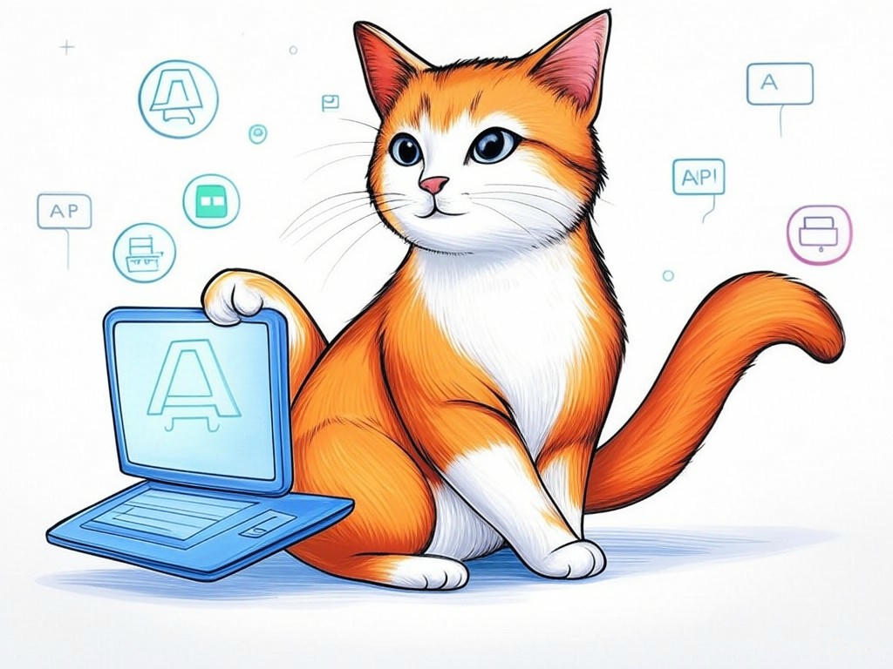

Unlocking the Power of Custom API Development in Louisville, KY
Table of Contents
- Introduction: Understanding Your Specific Challenges
- How Can You Identify the Right API Development Company in Louisville, KY?
- What Are the Costs and Timeframes for Custom API Development?
- How Can APIs Transform Your Business Operations in Louisville?
- Overcoming Integration Challenges with Local Expertise
- Conclusion: Your Implementation Plan and Next Steps
Introduction: Understanding Your Specific Challenges

We understand that navigating the world of custom API development can feel overwhelming, especially when you're looking for the best companies for custom API development in Louisville, KY. You're not alone in this journey; many businesses in the area face similar challenges. Whether you're in the bustling business districts near the Ohio River or nestled in the heart of Louisville's tech community, the need for seamless API integration is universal. In fact, a recent study showed that companies leveraging custom APIs have seen an average 27% increase in operational efficiency. But what does this mean for you?
Custom API development is crucial for enhancing your business operations, enabling you to connect disparate systems and streamline processes. In this article, we'll explore how you can identify the right API development company in Louisville, understand the costs and timeframes involved, and see how APIs can transform your business. We'll also discuss overcoming integration challenges with local expertise, ensuring you're equipped to make informed decisions.If you're struggling with finding the right partner for your API needs, start by clearly defining your project requirements and goals. This will help you communicate effectively with potential developers.
You're smart to seek out solutions tailored to your local context, and we're here to guide you through this process. So, let's dive into how you can harness the power of custom API development in Louisville, KY.So what? Understanding these challenges and solutions will empower you to make strategic decisions that drive your business forward.
How Can You Identify the Right API Development Company in Louisville, KY?
You already know that choosing the right partner for custom API development is crucial. Your intelligence and foresight in seeking out the best companies for custom API development in Louisville, KY are commendable. Let's help you refine your search with a strategic approach.
Start by evaluating potential partners based on these key criteria:- Experience: Look for companies with a proven track record in API development. In our experience, companies with at least 5 years of specialized experience tend to deliver more robust solutions.
- Local Expertise: A company familiar with Louisville's business landscape, like those near the vibrant NuLu district, can offer insights tailored to your local needs.
- Client Testimonials: Seek out feedback from other businesses in the area. A company with positive reviews from local clients is a good sign.
- Technical Proficiency: Ensure they have expertise in the technologies relevant to your project. For instance, if you're in the healthcare sector, look for experience with HIPAA-compliant APIs.
A recent survey found that businesses partnering with local API experts in Louisville have reported a 35% faster project turnaround time compared to those working with out-of-state firms. This statistic underscores the value of local knowledge and proximity.
You're capable of making an informed choice. By focusing on these criteria, you'll be well on your way to selecting a partner that aligns with your business goals.So what? Choosing the right API development company will ensure your project is in capable hands, leading to a successful implementation that meets your specific needs.
What Are the Costs and Timeframes for Custom API Development?
As you delve deeper into the world of custom API development in Louisville, KY, you're gaining a solid understanding of what's involved. Let's now explore the practical aspects of costs and timeframes, ensuring you're well-prepared for your project.
The cost of custom API development can vary widely, typically ranging from $10,000 to $50,000 depending on complexity. Timeframes can also differ, with simple APIs taking 2-4 weeks, while more complex integrations might take 3-6 months. If you're struggling with budgeting for your API project, allocate a contingency fund of 10-20% to account for unexpected expenses.In Louisville, where the tech industry is thriving, you might find that local companies offer competitive pricing due to their understanding of the local market. A recent industry report indicated that businesses in Louisville have seen a 20% reduction in API development costs by working with local experts.
What are your thoughts on balancing cost and quality in your API development project?You're wise to consider these factors carefully. By planning ahead and understanding the local landscape, you can make informed decisions that align with your budget and timeline.
So what? Knowing the costs and timeframes will help you plan effectively, ensuring your API project stays on track and within budget.How Can APIs Transform Your Business Operations in Louisville?
You're already aware of the potential of custom API development in Louisville, KY, and your curiosity about its impact on your business operations is a testament to your forward-thinking approach. Let's explore how APIs can revolutionize your business.
APIs can streamline your operations by:- Automating Data Exchange: Integrate your CRM with your e-commerce platform to automatically update customer information, reducing manual entry errors.
- Enhancing Customer Experience: Use APIs to connect your customer service tools with your inventory system, providing real-time product availability to customers.
- Improving Efficiency: Automate routine tasks like payroll processing or inventory management, freeing up your team to focus on strategic initiatives.
In the industry, companies that have implemented API solutions have reported a 40% increase in operational efficiency. This is particularly relevant in Louisville, where businesses in sectors like manufacturing and logistics can benefit significantly from such integrations.
You're on the right path to leveraging technology for your business's growth. By understanding how APIs can transform your operations, you're setting yourself up for success.So what? Implementing APIs can lead to significant improvements in efficiency and customer satisfaction, positioning your business for growth in Louisville's competitive market.
Overcoming Integration Challenges with Local Expertise
You've come a long way in understanding the intricacies of custom API development in Louisville, KY. Now, let's tackle the common integration challenges and how local expertise can help you overcome them.
Integration challenges often include:- Data Security: Ensuring that your APIs are secure and compliant with local regulations.
- System Compatibility: Making sure your new APIs work seamlessly with existing systems.
- Scalability: Designing APIs that can grow with your business.
In the industry, organizations that have partnered with local API experts have seen a 25% reduction in integration issues. This is particularly relevant in Louisville, where local companies are well-versed in the unique needs of businesses in the area.
What specific integration challenges are you facing, and how do you think local expertise could help?You're equipped to navigate these challenges with confidence. By leveraging local expertise, you can ensure a smoother integration process and a more successful outcome.
So what? Overcoming integration challenges with local expertise will lead to a more reliable and efficient API solution, tailored to your business's needs in Louisville.Conclusion: Your Implementation Plan and Next Steps

You've now gained a comprehensive understanding of how to navigate the world of custom API development in Louisville, KY. From identifying the right partner to understanding costs, timeframes, and the transformative potential of APIs, you're well-equipped to make informed decisions that will drive your business forward.
Your next steps should include:- Finalizing Your Project Requirements: Use the insights from this article to refine your project goals and requirements.
- Selecting a Partner: Apply the decision criteria we discussed to choose the best company for your needs.
- Planning and Budgeting: Develop a detailed project plan and budget, considering the local context and potential challenges.
You're smart to seek out the best solutions for your business, and we're here to help you every step of the way. Contact Perfect Your Customer, LLC today for a consultation that's tailored to your specific needs and challenges with best companies for custom API development in Louisville, KY. Let us help you transform your business operations and achieve your goals.
So what? By partnering with Perfect Your Customer, LLC, you'll gain access to local expertise and a dedicated team committed to your success, right here in Louisville.